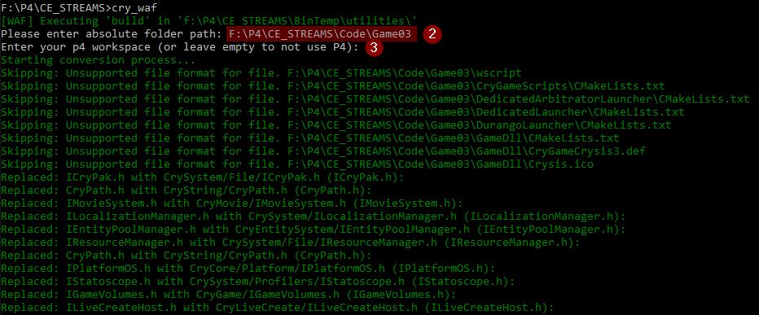
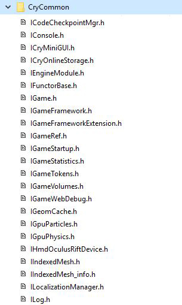
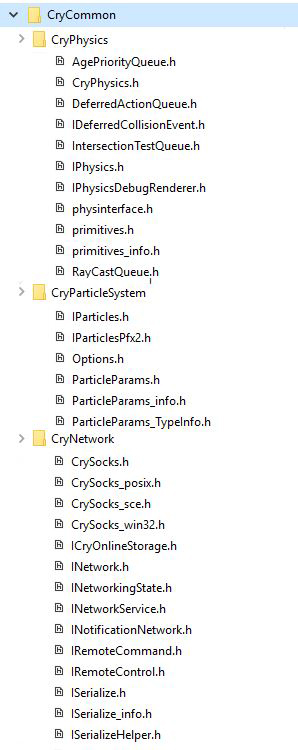
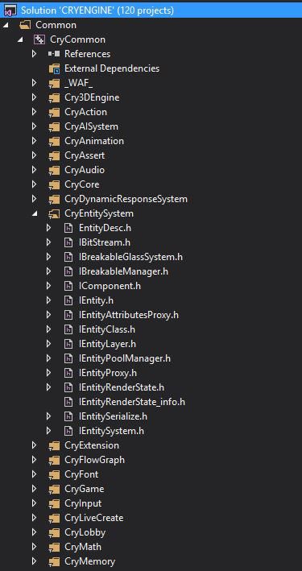

Обзор
Если вы перенесли свой проект на CRYENGINE 5.0, вы заметите в своем распоряжении множество новых функций, таких как DX12, C# и совершенно новый Sandbox UI.
Целью этой статьи является упрощение миграции проектов с CRYENGINE 5.0 на CRYENGINE 5.1. Основное внимание будет уделено изменениям, внесенным в формат исходного кода CRYENGINE.
CRYENGINE 5.0:
Хотя разработка CRYENGINE 5.0 была сосредоточена на новых функциях, в ней также были усовершенствованы некоторые существующие функции, чтобы упростить взаимодействие клиентов с CRYENGINE. Примерами являются менеджер потоков, управляемый данными; объединение всех существующих менеджеров потоков и изменение способа включения windows.h, а также очистка устаревших определений. Полный список изменений смотрите: Важные данные и изменения кода (CRYENGINE 5.0)
CRYENGINE 5.1:
CRYENGINE 5.1 развитие сосредоточено на стабильность и стандартизация форматирования исходного кода движка.
Основные моменты:
- Автоматические правила стиля кода; введено в CRYENGINE 5.0, были завершены.
- См. Обновление до CRYENGINE 5.1 – Форматирование кода если вы внесли изменения в исходный код CRYENGINE, чтобы облегчить интеграцию.
- Файлы CryCommon физически перемещены на диск. Теперь они отсортированы по категориям
Автоматическое преобразование вашего проекта в новый макет CryCommon:
Вместо того, чтобы вручную редактировать каждый файл. WAF предоставляет быстрое решение для преобразования файлов вашего проекта в новый макет.
1. В качестве первого шага запустите WAF GUI и выберите «Пользовательская папка и подпапки» в категории «Применить новый макет CryCommon».
2. Теперь переключитесь на окно вывода WAF. Вам будет предложено ввести имя папки, которую вы хотите преобразовать. Обратите внимание, что помимо вашей папки будут преобразованы также все подпапки.
3. Если вы используете P4, вы можете ввести здесь имя своего рабочего пространства, и инструмент автоматически извлечет все измененные файлы в список изменений по умолчанию. Если у вас нет или вы хотите использовать P4, просто оставьте строку пустой.
4. WAF начнет процесс конвертации.
 |
|---|
Примечание:Если в вашем проекте вы использовали имена файлов, аналогичные именам в CryCommon, конвертер может ошибочно идентифицировать такой файл и заменить его путем к файлу CryCommon. Однако преобразованный файл сначала пытается найти файл в локальной папке.
CryCommon изменения макета (подробно)
В версии CryEngine 5.1 CryCommon получил визуальное улучшение. Вместо простой иерархии файлов все файлы были перераспределены по папкам по категориям, что упрощает получение быстрого обзора функций, предоставляемых интерфейсом CryCommon.
Текущий (плоская иерархия) [На диске] | реорганизован (отсортировано по модулю) [На диске] | реорганизован (отсортировано по модулю) [Visual Studio] | |
|---|---|---|---|
 | => |  |  |
Однако категоризация файлов CryCommon требует небольших затрат, поскольку все текущие файлы, #включая файл CryCommon, должны подчиняться новому макету.
#include <ICryAnimation.h>
// to
#include <CryAnimation/ICryAnimation.h>
#include <IShader.h>
// to
#include <CryRenderer/IShader.h>